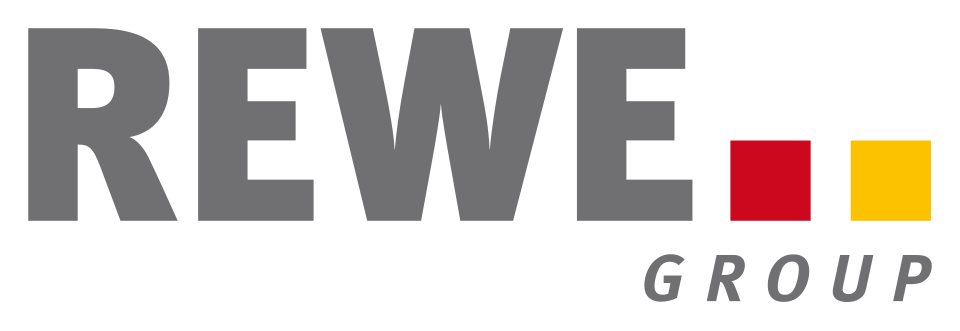

홈 > 브랜드 매거진 > REWE Group
REWE Group
레베 그룹(REWE Group)은 1927년 독일 쾰른에서 설립된 협동조합 기반 대형 식품유통 그룹이다.
산업 분야 리테일·커머스 · 공개 등급 자료 기반 · 브랜드 평가 4.1 ★

한눈에 보는 브랜드
레베 그룹은 1927년 독일 쾰른에서 17개 소매상 구매조합이 합병해 출범한 협동조합형 종합 유통·관광 기업으로, 정식 명칭은 서부구매조합 감사연합에서 유래했다. 창립 첫날부터 독립 소매상의 공동구매를 통한 가격 경쟁력 확보를 목적으로 했으며, 두 차례 전환점으로 1970년대 디스카운트 페니 도입과 1980년대 이후 여행·관광 사업 진출을 거치며 단일 슈퍼마켓을 넘어선 다각화 그룹으로 성장했다.
2025년 연결 외형 매출은 약 1004억 유로로 사상 처음 1000억 유로 선을 넘었고, 본사는 쾰른에 두고 있다.
브랜드 관점
가장 두드러진 차별점은 주주가치 극대화를 좇는 상장 대기업이 아니라, 1800개 이상의 독립 소매상이 다섯 개 지역 협동조합으로 묶여 모기업 의사결정에 참여하는 협동조합 지배구조라는 점이다. 이 구조는 단기 배당 압박 대신 장기 투자와 점포망 안정성을 가능케 해, 에데카·슈바르츠(리들·카우프란트)·알디와의 출혈 경쟁 속에서도 완충 역할을 한다.
동시에 풀서비스 슈퍼마켓 레베, 디스카운트 페니, DIY 토옴, 편의·이동소비 도매 레커란트, 여행 데어투어를 한 우산 아래 둔 멀티포맷·멀티섹터 전략으로 경기 변동 위험을 분산한다. 독일 식품소매에서 할인점이 지출의 절반에 육박하는 구조적 압박 속에서, 레베는 가격대를 슈퍼와 디스카운트로 나눠 동시 공략한다.
한국 독자에게는 농협·생협 같은 협동조합 모델이 글로벌 100조원대 유통·여행 복합기업으로 확장될 수 있음을 보여주는 사례로 읽힌다.
시작과 성장
20세기 초 독일 소매업은 대형 도매상과 제조사에 가격 협상력을 빼앗긴 영세 식료품상이 난립한 시기였고, 이들이 살아남기 위한 자구책이 공동구매 조합이었다. 1927년 쾰른에서 17개 구매조합이 통합해 레베가 출범했고 초기에는 헤이즐넛·말린살구·건포도 같은 품목을 공동으로 거래했다.
1940년 무렵 회원 8000명, 등록 조합 106개로 성장했으며, 제2차 세계대전으로 본부를 프레데부르크 등으로 옮겼다가 1945년 8월 쾰른에서 활동을 재개했다. 첫 번째 큰 전환점은 1970년대 디스카운트 채널 페니 도입으로, 고급형 슈퍼와 저가형 할인점을 병행하는 이원 가격 전략의 토대가 됐다.
두 번째 전환점은 1980~90년대 이후 BILLA 등을 통한 오스트리아·체코·루마니아 등 중동부 유럽 확장과 데어투어 중심의 여행·관광 진출로, 유통 단일 사업에서 벗어나 다각화 그룹으로 변모했다. 이후 2025년 스위스 호텔플란 인수까지 인수 기반 확장이 이어졌다.
브랜드 아이덴티티
브랜드 핵심 가치는 협동조합 뿌리에서 나온 신뢰·신뢰성·근접성과, 품질·지속가능성·고객 만족에 대한 약속이다. 비주얼 아이덴티티의 중심은 강렬한 진홍색으로, 1977년 붉은 날개형 라인과 노란 라인을 쓴 초기 로고에서 2006년 군더더기를 덜어낸 형태로 정리됐고 현재는 진홍색 바탕에 굵은 흰색 대문자를 얹어 에너지·열정과 안정감을 동시에 전한다.
타깃은 일상 장보기를 하는 폭넓은 독일·유럽 가계로, 풀서비스 슈퍼는 품질·근접성을 중시하는 층을, 페니는 가격 민감층을 겨냥한다. 보이스는 과장 없이 실용적이고 지역 밀착적이며, 최근에는 합리적 사치와 개인화된 경험 수요에 부응하는 메시지를 강화하고 있다.
제품과 서비스
사업은 크게 세 축으로 나뉜다. 첫째 풀서비스 식품소매로 슈퍼마켓 레베와 나카우프, 중동부 유럽의 BILLA, 드러그스토어 BIPA가 있다.
둘째 디스카운트로 독일과 이탈리아·루마니아·체코·헝가리의 페니가 핵심이며, DIY 부문 토옴 바우마르크트도 포함된다. 셋째 여행·관광으로 데어투어 그룹이 데어투어·쿠오니·아폴로 등 약 200개사를 거느린다.
여기에 이동소비 도매를 담당하는 레커란트가 더해진다. 채널은 오프라인 점포망과 디지털·온라인 식료품을 결합한다.
현재 상태
본사는 독일 쾰른에 있다. 지배구조는 협동조합형으로, 1800개 이상의 독립 소매상이 다섯 개 지역 협동조합과 FürSie eG를 통해 모기업 REWE-ZENTRALFINANZ eG의 주주를 구성하며 운영은 자회사 REWE-Zentral AG가 맡는 RZF·RZAG 이원 체계다.
사업은 독일을 기반으로 오스트리아·체코·슬로바키아·루마니아·헝가리·불가리아·리투아니아·크로아티아 등 유럽 다수 국가에 걸쳐 있고, 여행 부문은 16개국에 진출해 있다. 매출 규모는 2025년 연결 외형 매출 약 1004억 유로로 사상 처음 1000억 유로를 넘었으며, 같은 해 영업이익(EBITA)은 약 15억 유로 이상이다.
CEO는 리오넬 수크다.
타임라인
정리된 연도형 이벤트가 없습니다.
BI/CI 변천사
함께 읽을 브랜드
 리테일·커머스 · 자료 기반Leader Price
리테일·커머스 · 자료 기반Leader Price리더프라이스(Leader Price)는 자체상표(PB) 중심의 저가 식료품을 판매하는 프랑스 디스카운트 슈퍼마켓 체인이다.
Be
Best of the Bone
리테일·커머스 · 편집 검수Best of the BoneBest of the Bone는 2025년에 기록된 Shoppy Shop Brands 계열의 브랜드 아이덴티티 사례입니다. Universal Favourite가 아이...
Fl
Flaum
리테일·커머스 · 편집 검수FlaumFlaum는 2025년에 기록된 Shoppy Shop Brands 계열의 브랜드 아이덴티티 사례입니다. M/OTG가 아이덴티티 작업의 디자이너로 기록되어 있습니다....
Ko
Korshags
리테일·커머스 · 편집 검수KorshagsKorshags는 2025년에 기록된 Shoppy Shop Brands 계열의 브랜드 아이덴티티 사례입니다. Pond가 아이덴티티 작업의 디자이너로 기록되어 있습니다...
Ve
Veesey
리테일·커머스 · 편집 검수VeeseyVeesey는 2025년에 기록된 Shoppy Shop Brands 계열의 브랜드 아이덴티티 사례입니다. Onfire Design가 아이덴티티 작업의 디자이너로 기록...
Ay
Ayoh!
리테일·커머스 · 편집 검수Ayoh!Ayoh!는 2024년에 기록된 Shoppy Shop Brands 계열의 브랜드 아이덴티티 사례입니다. Center가 아이덴티티 작업의 디자이너로 기록되어 있습니다....
Lo
Lolo
리테일·커머스 · 편집 검수LoloLolo는 2024년에 기록된 Shoppy Shop Brands 계열의 브랜드 아이덴티티 사례입니다. Odds Studio가 아이덴티티 작업의 디자이너로 기록되어 있...
Ye
Yellowbird
리테일·커머스 · 편집 검수YellowbirdYellowbird는 2024년에 기록된 Shoppy Shop Brands 계열의 브랜드 아이덴티티 사례입니다. Gander가 아이덴티티 작업의 디자이너로 기록되어...